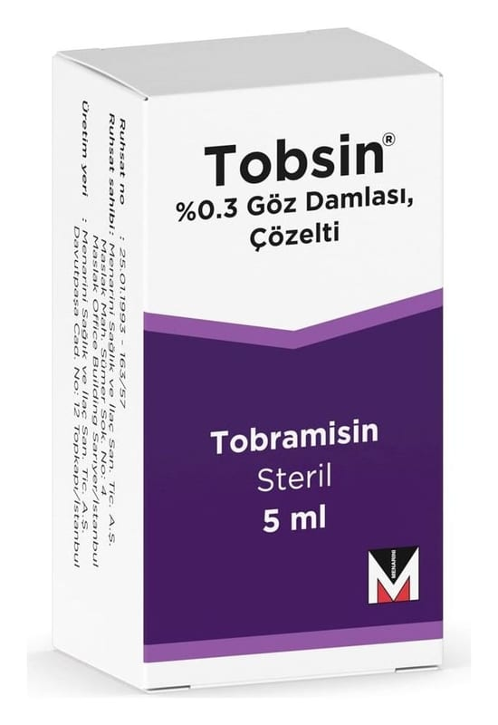

Tobsin %0,3 Göz Damlası, Çözelti, 5 ml

Ne için kullanılır
KT · Bölüm 1TOBSİN, gözün/gözlerin ve etrafının yüzeysel bakteriyel enfeksiyonlarının tedavisinde kullanılır.
TOBSİN anti-infektifler adı verilen ilaç grubunda yer almaktadır. Anti-infektifler grubu göz(ler)e hastalık bulaştıran mikroorganizmaların büyük bir kısmına karşı aktif olan antibiyotikleri (bu üründe tobramisin) içerir.
TOBSİN 5 ml’lik şişe içeren bir ambalajda sunulur. Berrak, renksiz bir çözeltidir.